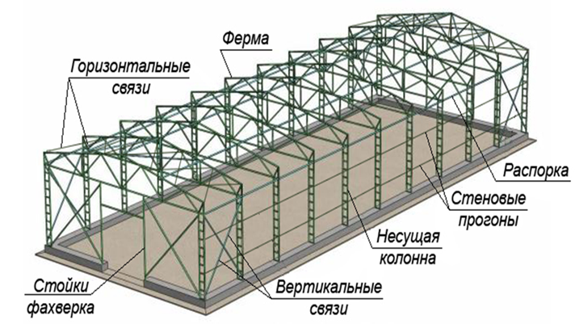
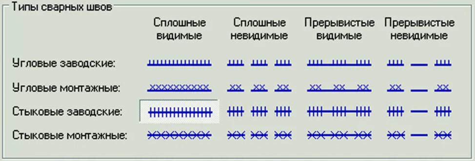
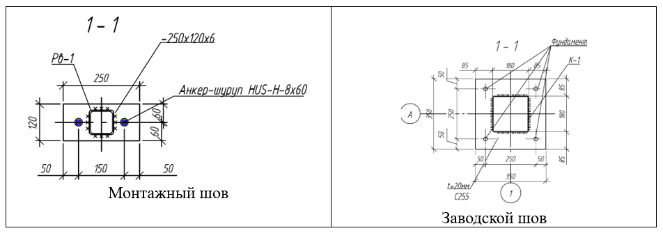
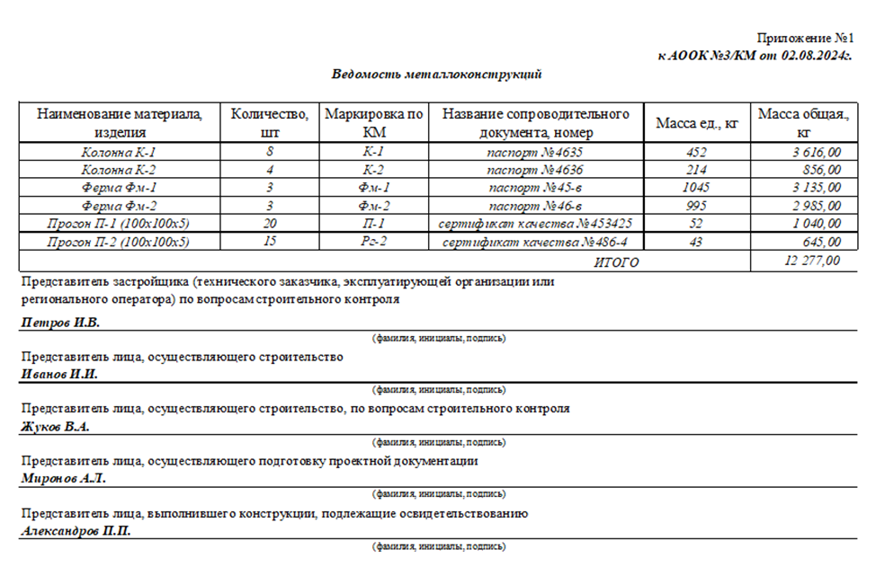

Исполнительная документация на металлические конструкции (КМ)
Исполнительная документация на металлические конструкции (МК) – это комплект документов, фиксирующий процесс монтажа и контроль качества металлических конструкций на строительных объектах.
Разделы в проектной/рабочей документации: КМ, КМД, КР, АС.
Что такое раздел КМ и КМД
Конструкции металлические (КМ)
Раздел КМ является частью рабочей документации.
Он содержит следующие основные элементы:
- общие данные: описательная часть, в которой содержится информация о проектных решениях, применяемых нормативных документах, описание конструкций, расчетные параметры климата, требования к защите конструкций от коррозии, а также некоторые требования по монтажу;
- поэтажные планы зданий и сооружений;
- схемы расположения металлоконструкций;
- чертежи разрезов зданий, строений и сооружений;
- узлы и стыки конструкций;
- спецификацию металла, ведомости элементов.
Цель КМ – дать общее представление о проектируемой конструкции, ее параметрах и функциональном назначении.
Конструкции металлические детализированные (КМД)
КМД – рабочая документация, разрабатываемая на основании раздела КМ.
Она включает:
- Чертежи отдельных элементов металлических конструкций.
- Детализацию соединений (болты, сварные швы).
- Маркировку элементов для удобства сборки.
- Спецификацию материалов и крепежей.
КМД используется на этапе производства и монтажа конструкций, служит руководством для подрядчиков, монтажников, а также для завода-изготовителя конструкций (в случае, если конструкция приходит на строительную площадку в сборе).
Нормативные документы:
- СП 16.13330.2017 – «Стальные конструкции».
- СП 70.13330.2012 – «Несущие и ограждающие конструкции».
- ГОСТ 23118-2019 – «Конструкции стальные строительные. Общие технические условия.
Основные виды металлических конструкций смотрите ниже в презентации.
Встроенный материал · штатный PDF-экспорт
Открыть сохранённый PDF · Исходная страница
Текст и изображения исходной страницы
Основные виды металлических конструкций

Традиционные стальные конструкции
Листовые
Легкие металлоконструкции
Основные виды металлических конструкций
Традиционные стальные конструкции
Листовые
Легкие металлоконструкции
Каркас здания состоит из следующих конструкций: колонны, стойки, опоры, балки, фермы, ригели, прогоны, распорки, связи.

Особенность оформления исполнительной документации на монтаж МК – основной упор идет на оформление специальных журналов (журнал сварочных работ, журнал монтажа строительных конструкций, журнал выполнения монтажных соединений на болтах с контролируемым натяжением).
Виды соединений МК:
- сварка
- на болтах без контролируемого натяжения
- на болтах с контролируемым натяжением
- специальные монтажные соединения (пристрелка высокопрочными дюбелями, саморезами, заклепками, пластическое деформирование кромок, фальцовка кромок).


№ п/п | Наименование документа | Ссылка на нормативный документ | Примечание | |
|---|---|---|---|---|
1 | Реестр исполнительной документации | ВСН 012-88, ч.2, форма 1.2, либо свободная | Может быть свободная форма или установленная заказчиком. | |
2 | Приказы о назначении ответственных лиц |
| Прикладываются приказы всех участников комиссии | |
3 | Документы о согласовании отступлений от проекта (ведомость изменений проекта) | ВСН 012-88, ч.2, форма 1.4 либо письма о согласовании | При необходимости | |
4 | Комплект рабочих чертежей с надписями о соответствии выполненных в натуре работ этим чертежам, сделанными лицами, ответственными за производство строительно-монтажных работ | Приказ Минстроя №344/пр п.7 | Рабочая документация (проект), выданная заказчиком в «производство работ». На листах вносим все отклонения. | |
5 | Выписки из СРО, лицензии; акты об устранении выявленных недостатков; ведомости объемов работ |
| При необходимости | |
6 | Журналы | |||
6.1 | Общий журнал работ | Приказ Минстроя №1026/пр от 02.12.2022 |
| |
6.2 | Журнал верификации закупленной продукции или Журнал входного учета и контроля качества получаемых деталей, материалов, конструкций и оборудования | ГОСТ 24297-2013 приложение А или СП 48.13330.2019 приложение И |
| |
6.3 | Журнал по монтажу строительных конструкций | Приложение А СП 70.13330.2012 |
| |
6.4 | Журнал сварочных работ | Приложение Б СП 70.13330.2012 |
| |
6.5 | Журнал антикоррозийной защиты сварных соединений | Приложение В СП 70.13330.2012 |
| |
6.6 | Журнал производства антикоррозионных работ | Приложение Г СП 72.13330.2016 |
| |
6.7 | Журнал выполнения монтажных соединений на болтах с контролируемым натяжением | Приложение Д СП 70.13330.2012 |
| |
6.8 | Журнал контрольной тарировки динамометрических ключей | Приложение Е СП 70.13330.2012 |
| |
7 | Акты освидетельствования скрытых работ (АОСР) | Приказ Минстроя №344/пр | ||
7.1 | АОСР на устройство подливки под базы колонн |
| ||
7.2 | АОСР на монтаж металлоконструкций (колонн, балок, прогонов, ферм, связей и др.) | Можно не оформлять (если не требуют), так как для конструкций достаточно только АООК | ||
7.3 | АОСР на антикоррозионную защиту сварных соединений |
| ||
7.4 | АОСР подготовку поверхности металлоконструкций под покраску (например, пескоструйная обработка, обезжиривание и пр.) |
| ||
7.5 | АОСР на грунтовку металлоконструкций |
| ||
7.6 | АОСР монтаж узлов на высокопрочных болтах |
| ||
7.7 | АОСР на покраску металлоконструкций | Каждый слой | ||
7.8 | АОСР на нанесение огнезащитного материала на металлоконструкции | При необходимости | ||
8 | Акты освидетельствования ответственных конструкций (АООК) | |||
8.1 | АООК на металлоконструкции (колонны, ригели, фермы, балки и пр.) | Приказ Минстроя №344/пр | Составляется на однотипные конструкции захватки или этажа перед нагружением | |
9 | Исполнительные схемы | ГОСТ Р 51872-2024 | ||
9.1 | Схема колонн/опор (отклонения отметок опорных поверхностей) | На каждый этаж с указанием геометрических отклонений/размеров | ||
9.2 | Схема колонн/опор (смещение осей колонн и опор относительно разбивочных осей) | -//- | ||
9.3 | Схема колонн/опор (отклонение колонны по вертикали в верхнем и нижнем сечениях) | -//- | ||
9.4 | Схема конструкций ферм / ригелей / балок / лестниц / площадок (отметки опорных узлов, смещение с осей на оголовках колонн из плоскости рамы) | С указанием геометрических отклонений/размеров | ||
9.5 | Схема конструкций ферм / ригелей / балок / лестниц / площадок (расстояние между осями ферм, балок, ригелей, по верхним поясам между точками закрепления) | -//- | ||
9.6 | Схема подкрановых балок (схема смещений от разбивочных осей) | На каждой опоре С указанием геометрических отклонений/размеров | ||
9.7 | Схема конструкций подкрановых балок (смещение опорного ребра балки с оси колонны) | -//- | ||
9.8 | Схема монорельсов (разность отметок нижнего ездового пояса на смежных опорах (вдоль пути) независимо от типа крана) |
| ||
9.9 | Схема сварных соединений | При требовании | ||
10 | Результаты экспертиз, обследований, лабораторных и иных испытаний выполненных работ, проведенных в процессе строительного контроля | |||
10.1 | Акт визуального и измерительного контроля качества сварных швов | Приказ РТН от 16.01.2024 №8, приложение 10 (м.б. другая форма) | На 100% длины сварных швов Выполняется квалифицированным специалистом | |
10.2 | Заключение (протокол) по неразрушающим методам контроля качества сварных швов (ультразвуковому, радиографическому капиллярному, магнитнопорошковому и др.) | СТО НОСТРОЙ 2.10.64-2012 приложение Ж, И, К, Л (могут быть другие формы) | Неразрушающий контроль (НК) сварных соединений должны проводить специалисты, имеющие квалификацию I, II или III в части одного или более методов НК. НК должен производится аттестованной лабораторией. | |
10.3 | Акт приемки защитного покрытия | Приложение Д СП 72.13330.2016 | На антикоррозийное покрытие м/к | |
10.4 | Протокол испытаний огнезащитного покрытия на м/к |
| При наличии огнезащиты м/к Выдается лабораторией | |
11 | Документы, подтверждающие проведение контроля за качеством применяемых строительных материалов (изделий) | |||
11.1 | Документ о качестве стальных строительных конструкций | ГОСТ 23118-2019, приложение В | Выдается заводом-изготовителем МК | |
11.2 | Сертификаты/паспорта качества на используемые материалы | Приказ Минстроя №344/пр |
| |
11.3 | Свидетельство об аттестации и (или) аккредитации лаборатории |
|
| |
11.4 | Свидетельства о поверке средств измерений |
|
| |
Пример заполнения АООК на монтаж МК:
АООК оформляется на законченные отдельные конструкции перед их нагружением или эксплуатацией
В приложении к акту добавьте исполнительную схему и все результаты испытаний.

Примеры оформления исполнительных схем скачайте по ссылке и используйте в своей дальнейшей работе.
Как заполнять журналы – смотрите в отдельных уроках.
Примечание на 24.09.2026. Пункт 5 Порядка ведения ИД по приказу Минстроя № 344/пр изменён приказом № 369/пр с 01.03.2026. Перед применением изложенных здесь требований сверьте актуальную редакцию: приказ № 344/пр, изменение № 369/пр. Исходный учебный текст не изменён.
{kind=link}
{kind=link}
{kind=link}
{kind=link}